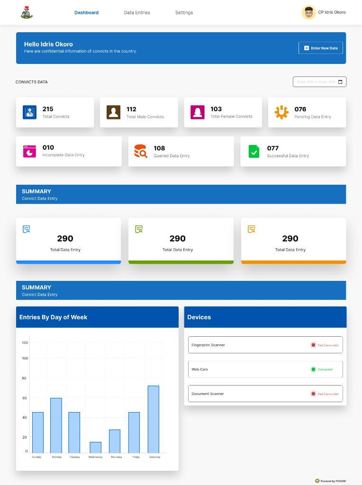
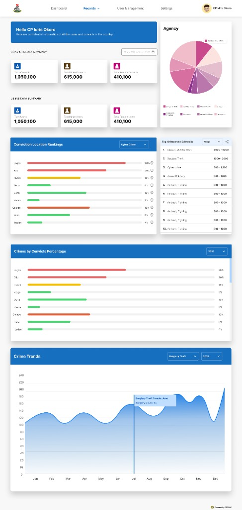
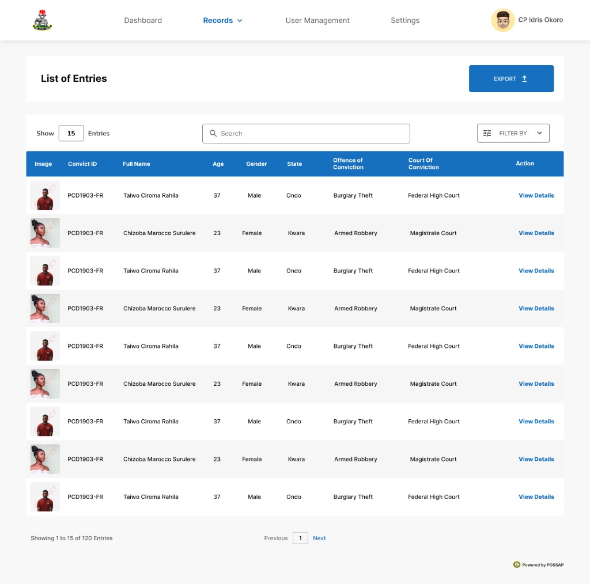
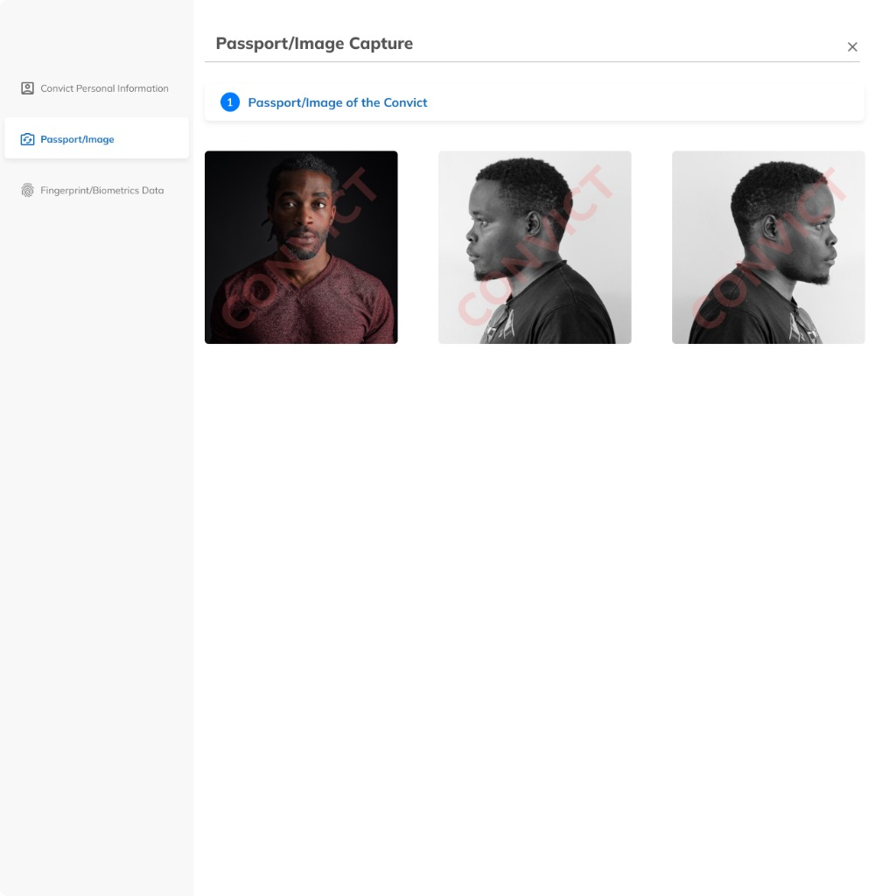
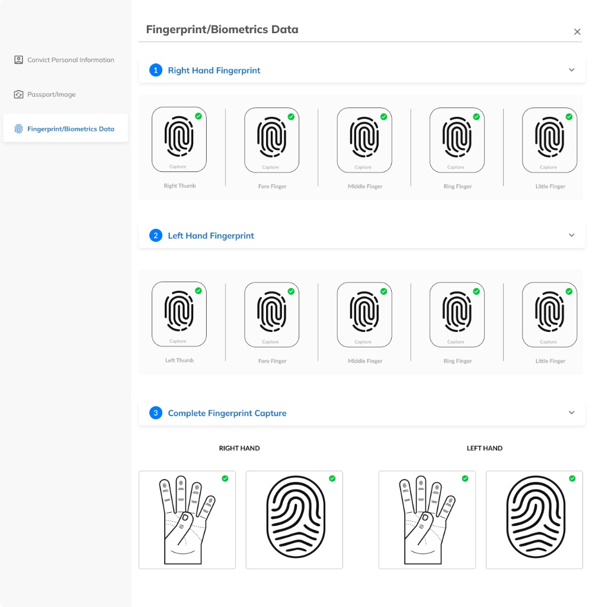
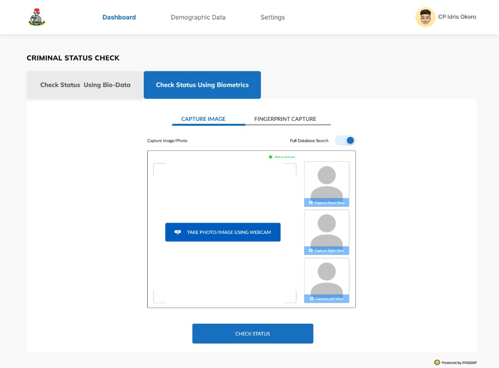
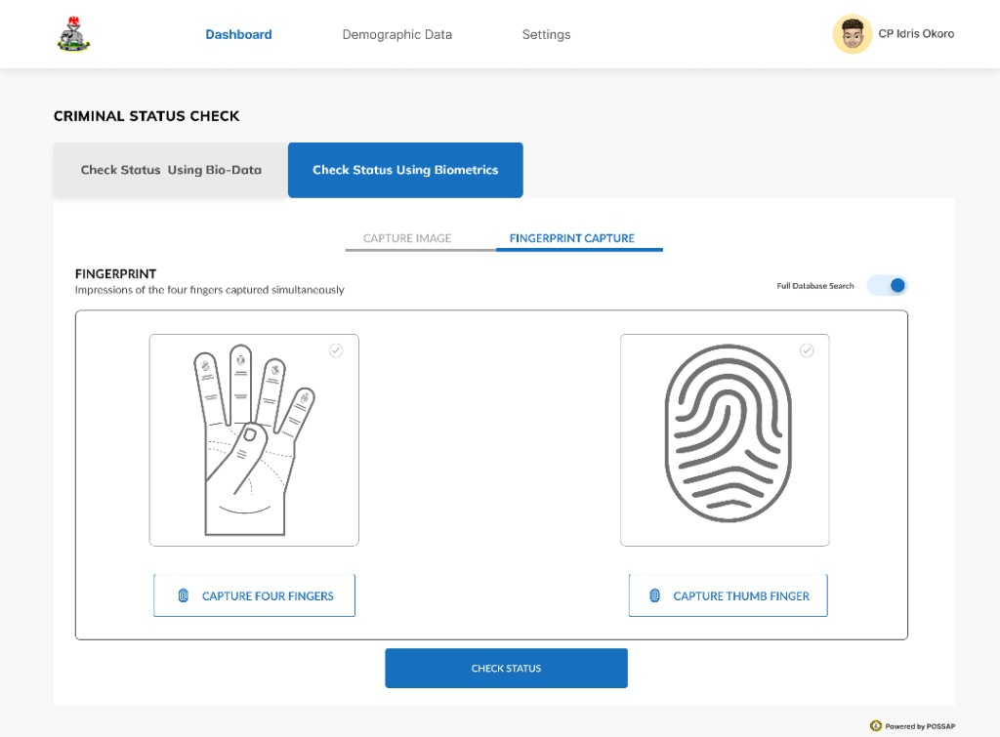

Live Portal • possap.gov.ng
Public Specialized Services Automation Platform — High-availability public web portal for Nigerian citizens, diplomatic missions, and corporate organizations to initiate and track police character clearances, firearms licensing, tinted glass permits, and specialized protection details with integrated digital payment gateways.

Operations Console
Intake & Peripheral Device Management — Real-time tracking of 215 convict entries, pending vs verified submission statuses, weekly intake curves, and live peripheral device connectivity for fingerprint scanners, optical webcams, and document scanners.

National Intelligence
Command Analytics & Crime Trends — Executive oversight for high-ranking police command (CP Idris Okoro), analyzing 1,050,100 nationwide convicts, agency jurisdiction shares, state-by-state conviction density rankings, and multi-year crime trend curves.

Records Ledger
National Convict Directory — Centralized, filterable judicial audit ledger cataloging criminal records with permanent Convict IDs, high-resolution mugshots, demographic profiling, offenses (Burglary, Armed Robbery), and presiding courts of conviction.

Facial Biometrics
Three-Angle Forensic Mugshot Capture — Standardized photo enrollment interface capturing frontal face, left profile, and right profile angles with embedded cryptographic security watermarks.

AFIS Enrollment
10-Print Fingerprint & Slap Capture System — Comprehensive biometric ingestion workflow with live sensor feedback for all 10 individual digits plus flat dual-hand 4-finger slap scans for nationwide AFIS criminal matching.

Status Verification
Criminal Status Check (Facial Verification) — Real-time biometric interrogation interface enabling officers to verify suspect identity via connected webcam capture (Front, Right, Left view) with instant full-database criminal record matching.

AFIS Verification
Criminal Status Check (Fingerprint AFIS Match) — High-throughput biometric matching console executing simultaneous 4-finger flat slap and thumb verification queries directly against the national criminal database.
01 · Live Portal
Citizen Portal
possap.gov.ng live website
02 · Operations
Intake Console
Field entries & device hardware
03 · Intelligence
National Analytics
1M+ convicts & state rankings
04 · Directory
Convict Directory
Filterable records & court data
05 · Biometrics
Mugshot Capture
3-angle biometric facial system
06 · AFIS
10-Print Capture
10-digit & dual slap enrollment
07 · Verification
Facial Status Check
Webcam match & query
08 · AFIS Query
Fingerprint Check
4-finger slap verification